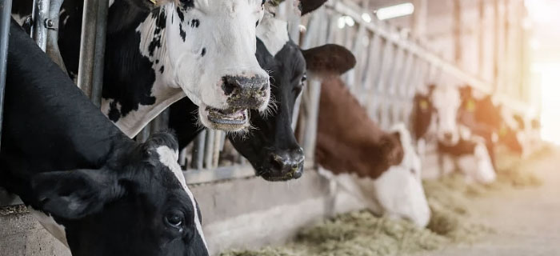
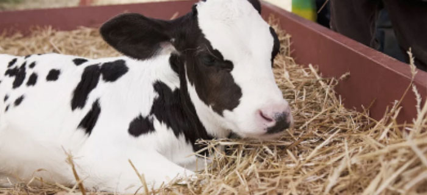

摄像头与体重识别Camera and weight recognition
为了满足日益增长的高端肉制品需求，针对牲畜的饲养育肥环节，通过对体重体况进行实时监测，对进食和饮水环节进行优化管理，同时增强母乳喂养的比重，保证肉质嫩度、风味、多汁性。
视频称重
通过视频进行牲畜的身体尺寸的计算，然后同时计算出它的体重变化情况。及时发现体重增减情况，监测牛只增重阶段性目标的是否达成

进食饮水监控
牲畜食草饮水数量会被监控记录，低于育肥标准值，即会触发预警，根据育肥的情况，调整饲料营养配比，按肉品质量，优化饲养环节，增减牲畜运动量。
亲情养育
亲情养育（母乳喂养）的时长占比增加会增强初生牲畜的抵抗力和免疫力，减少幼小牲畜的疾病死亡率，同一年龄段的幼畜体型体质会优于没有母乳喂养的幼畜体型体质。
